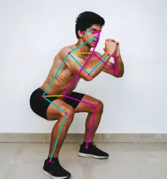

Movenet
Movenet is a machine learning model that detects 17 keypoints of a body from an image or video.

You can use it for various purposes, such as...
- Control a robot to mimic a human pose
- Pilot a drone using body movement
- Create an exercise app that can count push-ups, detect yoga poses, etc
Capabilities
Movenet can run at 30+ FPS on most modern computers, and can detect the following keypoints...
| Keypoint | S/N |
|---|---|
| nose | 0 |
| left_eye | 1 |
| right_eye | 2 |
| left_ear | 3 |
| right_ear | 4 |
| left_shoulder | 5 |
| right_shoulder | 6 |
| left_elbow | 7 |
| right_elbow | 8 |
| left_wrist | 9 |
| right_wrist | 10 |
| left_hip | 11 |
| right_hip | 12 |
| left_knee | 13 |
| right_knee | 14 |
| left_ankle | 15 |
| right_ankle | 16 |
Given a image or video, Movenet will output the (x, y) coordinates of each of theses points (...provided they are visible in the image).
Limitations
Movenet cannot detect hand poses (eg. hands open or closed). It also cannot detect mouth, fingers, toes, etc. If needed, there are other models which can detect those.
Installation
To use Movenet, you will need to install a few libraries...
TensorFlow
This is the software library for machine learning. Follow the installation instructions here...
https://www.tensorflow.org/install/pip
TensorFlow_hub
Used for loading the Movenet model. In a terminal, run...
pip install -q tensorflow_hub
OpenCV
This is a computer vision library for processing the image. In a terminal, run...
pip install -q opencv-python
Model Types
Movenet provides two models...
Thunder
Higher accuracy, lower performance. You can download it here...
https://tfhub.dev/google/movenet/singlepose/thunder/4
Note that Thunder expects the input image to be 256x256.
Lightning
Lower accuracy, higher performance. You can download it here...
https://tfhub.dev/google/movenet/singlepose/lightning/4
Note that Lightning expects the input image to be 192x192.
Unpacking
You should extract the downloaded files into their own folder. In the examples below, it is assumed that the Thunder model files are extracted into a directory named movenet_singlepose_thunder_4, and the Lightning model files are extracted into a directory named movenet_singlepose_lightning_4.
Code (Display Only)
The code for using Movenet is rather complex, so we'll be breaking it up into multiple small steps. In this first step, we'll be using OpenCV to capture a video image and display it; there's actually no usage of Movenet here.
import cv2
cap = cv2.VideoCapture(0)
success, img = cap.read()
while success:
cv2.imshow('Movenet', img)
if cv2.waitKey(1) == ord("q"):
break
success, img = cap.read()
cap.release()
import cv2 : Imports the OpenCV module.
cap = cv2.VideoCapture(0) : Open camera 0 for video capture. If you have more than one camera, you can change this number to select a different camera.
success, img = cap.read() : Capture one image frame from the camera. It will return a success value indicating if it was successful, and the actual image img.
cv2.imshow('Movenet', img) : Displays the image on screen.
if cv2.waitKey(1) == ord("q"): : Checks if the "q" button was pressed. If it was, break out of the while loop. IMPORTANT: The previous imshow will not work without this waitKey.
cap.release() : Release the camera, allowing other programs to use it.
Code (Process Image)
In this example, we'll process the captured image to make it fit within the size that Movenet expects. Note that Thunder expects a 256x256 image, while Lightning expects 192x192. We are still not doing any Movenet detection yet.
import tensorflow as tf
import cv2
import numpy as np
cap = cv2.VideoCapture(0)
success, img = cap.read()
while success:
tf_img = cv2.resize(img, (256,256))
tf_img = cv2.cvtColor(tf_img, cv2.COLOR_BGR2RGB)
tf_img = np.asarray(tf_img)
image = np.expand_dims(tf_img,axis=0)
image = tf.cast(image, dtype=tf.int32)
cv2.imshow('Movenet', img)
if cv2.waitKey(1) == ord("q"):
break
success, img = cap.read()
cap.release()
import tensorflow as tf : Imports the TensorFlow module.
import numpy as np : Imports the numpy module. This module is commonly used on Python for data processing.
tf_img = cv2.resize(img, (256,256)) : Resize the image to 256x256. If you're using Lightning, you'll need to change this to 192x192.
tf_img = cv2.cvtColor(tf_img, cv2.COLOR_BGR2RGB) : Change the color format. By default, it is in Blue-Green-Red (BGR), and we'll need to change it to RGB to suit Movenet.
tf_img = np.asarray(tf_img) : Converts the image into an numpy array.
image = np.expand_dims(tf_img,axis=0) : This adds a dimension to the image data. It's required for Movenet.
image = tf.cast(image, dtype=tf.int32) : This converts the image data into int32 format. It's required for Movenet.
Code (Single Keypoint Only)
In this example, we'll print out the position of a single keypoint (left eye). Note that the position is normalized (ie. the leftmost position is 0, the rightmost is 1.0, and the middle is 0.5).
import tensorflow as tf
import tensorflow_hub as hub
import cv2
import numpy as np
model = hub.load('movenet_singlepose_thunder_4')
movenet = model.signatures['serving_default']
cap = cv2.VideoCapture(0)
success, img = cap.read()
while success:
tf_img = cv2.resize(img, (256,256))
tf_img = cv2.cvtColor(tf_img, cv2.COLOR_BGR2RGB)
tf_img = np.asarray(tf_img)
image = np.expand_dims(tf_img,axis=0)
image = tf.cast(image, dtype=tf.int32)
outputs = movenet(image)
keypoints = outputs['output_0']
print(keypoints[0,0,1])
cv2.imshow('Movenet', img)
if cv2.waitKey(1) == ord("q"):
break
success, img = cap.read()
cap.release()
import tensorflow_hub as hub : The tensorflow_hub module is used to help load the Movenet model.
model = hub.load('movenet_singlepose_thunder_4') : This loads the Thunder model into the variable model. You can alternatively use Lightning here.
movenet = model.signatures['serving_default'] : Loads movenet.
outputs = movenet(image) : Loads the image into Movenet. It will then return the keypoints. Note that it will always return 17 keypoints, even if some of them are not visible.
keypoints = outputs['output_0'] : Extract the output. There is only one output ('output_0') from Movenet.
print(keypoints[0,0,1]) : Prints out the position of the left eye (...s/n 1). Note that the format is y, x, confidence. If you want to display a different keypoint, change the last number.
Run the program, then try moving around and see how the numbers change. What happens to the confidence level when the keypoint is not in view of the camera?
Code (Mark Keypoints)
In this example, we'll mark out the position of the keypoints on screen. This is great for visualizing the Movenet results, but it is not strictly necessary if you just need to control a robot or drone.
import tensorflow as tf
import tensorflow_hub as hub
import cv2
import numpy as np
model = hub.load('movenet_singlepose_thunder_4')
movenet = model.signatures['serving_default']
cap = cv2.VideoCapture(0)
success, img = cap.read()
h, w, _ = img.shape
while success:
tf_img = cv2.resize(img, (256,256))
tf_img = cv2.cvtColor(tf_img, cv2.COLOR_BGR2RGB)
tf_img = np.asarray(tf_img)
image = np.expand_dims(tf_img,axis=0)
image = tf.cast(image, dtype=tf.int32)
outputs = movenet(image)
keypoints = outputs['output_0']
for k in keypoints[0,0,:,:]:
if k[2] > 0.3:
yc = int(k[0] * h)
xc = int(k[1] * w)
img = cv2.circle(img, (xc, yc), 2, (0, 255, 0), 5)
cv2.imshow('Movenet', img)
if cv2.waitKey(1) == ord("q"):
break
success, img = cap.read()
cap.release()
h, w, _ = img.shape : Get the height and width of the original image.
for k in keypoints[0,0,:,:]: : Iterates through the 17 keypoints.
if k[2] > 0.3: : Check if the confidence level is greater than 0.3; if it's too low, it may be a false result. You can change this threshold to suit your needs.
yc = int(k[0] * h) : Multiply normalized (0 to 1.0) y coordinate of the keypoint by the height of the image to get it's y position.
xc = int(k[1] * w) : Same as before, but for width.
img = cv2.circle(img, (xc, yc), 2, (0, 255, 0), 5) : Draw a circle at the keypoint position.
Code (Compare and Scale)
If you plan to use Movenet to control something, you will often need to compare the position of two or more keypoints, and scale the result so that you can have a consistent result regardless of whether you are near or far from the camera.
This example demonstrates how to control an onscreen ball using movement from your right arm. It compares the x position of your right wrist to your right elbow to determine the position of the ball. It also scales the value against the distance between your right elbow and your right shoulder.
For this example to work right, you should keep your entire right arm in view of the camera, and your elbow should stay directly below your shoulder.
import tensorflow as tf
import tensorflow_hub as hub
import cv2
import numpy as np
model = hub.load('movenet_singlepose_thunder_4')
movenet = model.signatures['serving_default']
cap = cv2.VideoCapture(0)
success, img = cap.read()
h, w, _ = img.shape
while success:
tf_img = cv2.resize(img, (256,256))
tf_img = cv2.cvtColor(tf_img, cv2.COLOR_BGR2RGB)
tf_img = np.asarray(tf_img)
image = np.expand_dims(tf_img,axis=0)
image = tf.cast(image, dtype=tf.int32)
outputs = movenet(image)
keypoints = outputs['output_0']
shoulder = keypoints[0,0,6]
elbow = keypoints[0,0,8]
wrist = keypoints[0,0,10]
upper_arm_length = ((shoulder[0] - elbow[0])**2 + (shoulder[1] - elbow[1])**2) ** 0.5
x_pos = wrist[1] - elbow[1]
x_pos = x_pos / upper_arm_length
x_pos = int((x_pos * w + w) / 2)
img = cv2.circle(img, (x_pos, int(h/2)), 2, (0, 255, 0), 5)
cv2.imshow('Movenet', img)
if cv2.waitKey(1) == ord("q"):
break
success, img = cap.read()
cap.release()
upper_arm_length = ((shoulder[0] - elbow[0])**2 + (shoulder[1] - elbow[1])**2) ** 0.5 : Calculates the length of the upper arm using Pythagoras' theorem.
x_pos = wrist[1] - elbow[1] : Calculate x position of wrist, relative to the elbow. We want the wrist position to be relative to the elbow, so that the result won't be affected by your position in the camera.
x_pos = x_pos / upper_arm_length : Scale the result by the upper arm length. This ensures that the result is not affected by your distance to the camera.
x_pos = int((x_pos * w + w) / 2) : Calculate the x position to draw the ball. Basically, we scale it by the image width, then add width to it and divide by 2 to ensure that the ball is at the center of the screen when the wrist is at the zero position.
img = cv2.circle(img, (x_pos, h/2), 2, (0, 255, 0), 5) : Draw the circle. We don't care about the y position in this exercise, so we'll just set it to half the height.